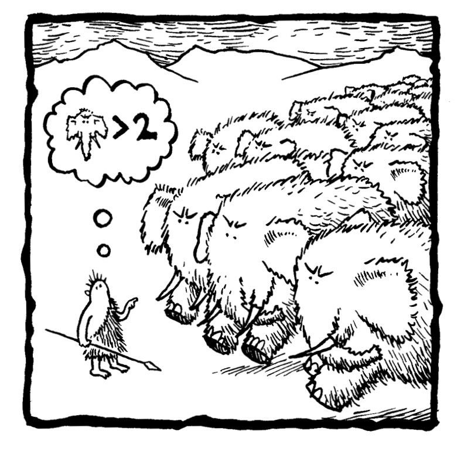

1992年夏天，我在布赖顿的《防卫晚报》当见习记者。我每天和经常出入地方法院的犯事青少年打交道，采访店主对经济衰退的看法，还要每周更新两次蓝铃花铁路的运行时间。如果你是一名小偷或一位店主，这可能不算一段美好的回忆；但对我来说，这却是我一生中非常快乐的时期。
那时，约翰·梅杰刚刚连任首相不久。沉浸在胜利的喜悦中的他提出了一项最令人难忘（也饱受嘲讽）的政策倡议。他以国家领导人的严肃态度宣布设立一条电话热线，为民众提供有关锥形交通路标的信息。虽然这是一个平庸的提议，但首相提出它的阵势却搞得好像世界未来都要依靠它了一样。
但在布赖顿，交通锥可是人们关注的焦点。你开车进城的路上一定会遇到施工路段。以伦敦为起点的主干道A23（M）像一条由带橙色条纹的交通锥围起的走廊，从克劳利延伸到普雷斯顿公园。《防卫晚报》煞有介事地给读者提出了挑战，让他们猜猜，在数十英里（1英里约为1.6千米）长的A23（M）公路上一共有多少交通锥。资深编辑颇为得意，认为自己想出了一个绝妙的主意：这道假日游园会风格的趣题不仅提供了背景信息，也取笑了中央政府，这简直是地方报纸的完美素材。
然而，比赛开始后才过几个小时，编辑部就收到了第一份答案，读者已经估算出了交通锥的正确数量。我记得那些资深编辑在办公室里垂头丧气，没有人说话，仿佛一位重要的地方议员刚刚去世。他们原本是想滑稽地模仿首相，但现在自己却被弄得像傻瓜一样。
编辑认为猜出20英里左右的高速公路上有多少交通锥是不可能完成的任务。显然事实并非如此，我想我是这栋大楼里唯一一个知道原因的人。假设交通锥以相同的间距放置，你只需要进行一步计算就可以得到结果：
交通锥数量=道路长度÷交通锥间隔的距离
道路的长度可以通过开车记录行驶距离或者测量地图得出。要计算相邻交通锥的间距，你只需要一把卷尺。即使交通锥之间的间距可能会有一些变化，估计的道路长度也可能会有误差，但在很长的距离上，这种估算的准确性已经足够赢得地方报纸组织的竞猜活动了（而且交警向《防卫晚报》提供正确答案时所使用的计算方式可能与此并无二致）。
我一直清楚地记得这件事，这是在记者的职业生涯中，我第一次意识到数学思维的重要性的时刻。我也不安地意识到，大多数记者不懂数学。其实算出排在路边的交通锥的数量并不复杂，但对我的同事来说，计算并不简单。
在这件事发生的两年前，我刚拿到了数学和哲学学位，横跨文理两个领域。表面上看起来，进入新闻业标志着我放弃了理科，投身于文科。在“交通锥惨败事件”后不久，我离开了《防卫晚报》，到伦敦工作。最终，我成为一名驻里约热内卢的记者。我对数字的敏感性偶尔会有些用处，比如，我能发现近年被砍伐的亚马孙丛林的面积相当于哪一个欧洲国家，或者计算各种货币危机期间的汇率。但除此之外，我几乎已经把数学抛在了脑后。
几年前，我回到英国，不知道接下来要做什么。我卖过巴西足球运动员的短袖衫，开过博客，打过进口热带水果的主意，但差不多一事无成。在重新审视自己人生的过程中，我再次想起了数学这门耗费了我太多青春的学科，我正是在这里找到了灵感的火花，它引领我写成了这本书。
成年人进入数学世界的感受和孩子的感受完全不同。对孩子来说，学习数学代表着需要通过考试，这意味着，他们会错过很多真正引人入胜的东西。现在，我可以自由游走于其间，看到一个新奇又有趣的课题就去探索一番。我学习了民族数学，也就是研究不同文化如何对待数学，以及数学是如何被宗教塑造的学科。我对行为心理学和神经科学的前沿研究很感兴趣，这些研究渐渐弄清了大脑思考数字的原因和方式。
我意识到，这些探索也很像一位驻外记者，但不同的是，我访问的国家是一个抽象的国家，它叫“数学王国”。
我的旅程是一次真正意义上的旅行，因为我想通过现实世界体验数学。所以，我飞到印度，想弄清楚这个国家是如何发明“零”的，这是人类历史上最伟大的智力突破之一。我在里诺的一家大型赌场预订了房间，想用实际行动看看什么是概率。我还在日本见到了世界上最会算术的黑猩猩。
随着研究的深入，我发现自己处于一个奇怪的位置，我既是专家，也是一位业余爱好者。重新学习学校教过的数学知识，就像重新认识老朋友一样，但还有很多朋友的朋友是我从来没有见过的，我也见到了很多新来的孩子。举个例子，在我写这本书之前，我不知道几百年来一直有人提倡要在我们的十进制系统中再引入两个数字，我也不知道为什么英国是第一个铸造七边形硬币的国家，我对数独背后的数学更是一无所知（因为在我上学时，数独还没有被发明出来）。
我来到了一个意料之外的地方，这些地方包括布伦特里、埃塞克斯和美国亚利桑那州的斯科茨代尔，还读到了一些意想不到的书。为了理解毕达哥拉斯为什么对食物如此挑剔，我花了一整天读了一本关于植物仪式历史的书。
这本书从第0章开始，因为我想强调，这一章讨论的主题是“前数学”，讲述了数字是如何产生的。从第1章开始，数字已经出现，我们就正式开始了。从这里到第11章结束，这本书将涵盖尽可能多的领域，包括算术、代数、几何、统计学，等等。我将精简关于专业上的内容，但有时别无他法，我就只能写出方程和证明。如果你觉得头疼，可以跳到下一节的开头，内容就会变得容易起来。每一章都是独立的，也就是说，不必阅读前面的章节就可以理解下一章。你也可以按任意顺序阅读，但我还是希望你从头到尾阅读所有章节，因为它们大致按照时间顺序介绍了这些数字思想，偶尔也会回顾一下之前的要点。这本书的目标读者是非数学专业的读者，书中涵盖了从小学水平一直到本科快毕业时才会学到的概念。
因为数学也包括数学的历史，所以我还加入了一些历史资料。在人文学科中，总是有新的思想或风潮取代早先的观点；在应用科学中，理论会不断完善。但数学与它们不同：数学永不过时。毕达哥拉斯和欧几里得的定理现在仍然有效，因此，毕达哥拉斯和欧几里得是我们在学校里学到的最古老的名字。在英国普通中等教育证书（GCSE）的教学大纲中，几乎所有内容都是17世纪中期之前人们发现的数学知识；同样，英国中学高级水平考试（A-level）的范围也没有超过18世纪中期已知的数学知识。（我在大学里所学的最近的数学知识诞生于20世纪20年代。）
在写这本书的时候，与读者交流数学发现带来的兴奋和惊奇，一直是我的动力之源。（当然，也有一部分动力是为了证明数学家是很有趣的。我们是逻辑之王，对不合逻辑的东西有极强的辨别能力。）数学总是因枯燥和困难而广为人知。确实，数学往往很难，但数学也可以易于理解，并带来启发。最重要的是，它拥有非凡的创造力。抽象的数学思想是人类的伟大成就之一，它也可以说是人类进步的基础。
数学王国是一个了不起的地方，我建议你去那里看看。
亚历克斯·贝洛斯
2010年1月
